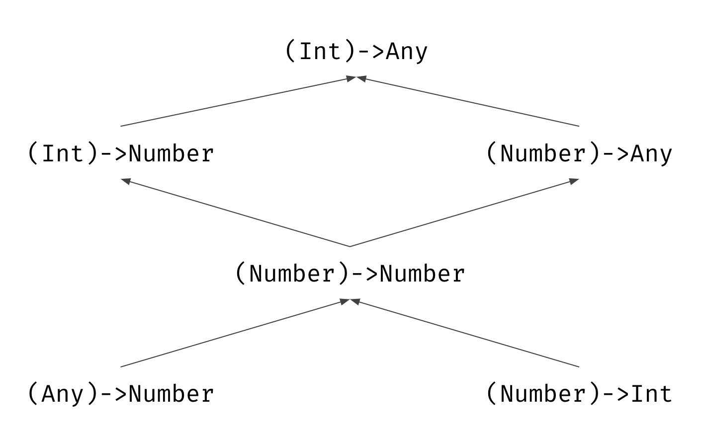
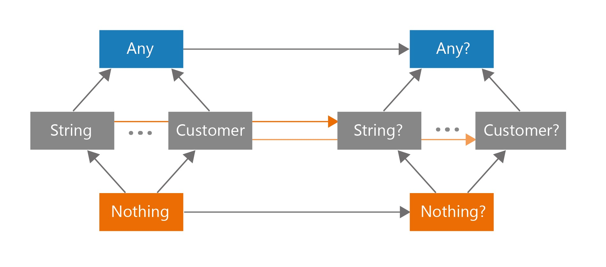
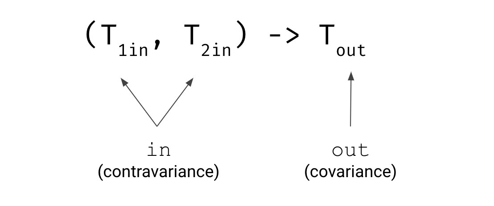

Item 24: Consider variance for generic types
Let’s say that we have the following generic class:
class Cup<T>
Type parameter T in the above declaration does not have any variance modifier (out or in) and by default, it is invariant. It means that there is no relation between any two types generated by this generic class. For instance, there is no relation between Cup<Int> and Cup<Number>, Cup<Any> or Cup<Nothing>.
fun main() {
val anys: Cup<Any> = Cup<Int>() // Error: Type mismatch
val nothings: Cup<Nothing> = Cup<Int>() // Error
}
If we need such a relation, then we should use variance modifiers: out or in. out makes type parameter covariant. It means that when A is a subtype of B, and Cup is covariant (out modifier), then type Cup<A> is a subtype of Cup<B>:
class Cup<out T>
open class Dog
class Puppy: Dog()
fun main(args: Array<String>) {
val b: Cup<Dog> = Cup<Puppy>() // OK
val a: Cup<Puppy> = Cup<Dog>() // Error
val anys: Cup<Any> = Cup<Int>() // OK
val nothings: Cup<Nothing> = Cup<Int>() // Error
}
The opposite effect can be achieved using in modifier, which makes type parameter contravariant. It means that when A is a subtype of B, and Cup is contravariant, then Cup<A> is a supertype of Cup<B>:
class Cup<in T>
open class Dog
class Puppy(): Dog()
fun main(args: Array<String>) {
val b: Cup<Dog> = Cup<Puppy>() // Error
val a: Cup<Puppy> = Cup<Dog>() // OK
val anys: Cup<Any> = Cup<Int>() // Error
val nothings: Cup<Nothing> = Cup<Int>() // OK
}
Those variance modifiers are illustrated in the below diagram:

Function types
In function types (explained deeply in Item 35: Consider defining a DSL for complex object creation) there are relations between function types with different expected types of parameters or return types. To see it practically, think of a function that expects as argument a function accepting an Int and returning Any:
1 fun printProcessedNumber(transition: (Int)->Any) {
2 print(transition(42))
3 }
Based on its definition, such a function can accept a function of type (Int)->Any, but it would also work with: (Int)->Number, (Number)->Any, (Number)->Number, (Any)->Number, (Number)->Int, etc.
val intToDouble: (Int) -> Number = { it.toDouble() }
val numberAsText: (Number) -> Any = { it.toShort() }
val identity: (Number) -> Number = { it }
val numberToInt: (Number) -> Int = { it.toInt() }
val numberHash: (Any) -> Number = { it.hashCode() }
printProcessedNumber(intToDouble)
printProcessedNumber(numberAsText)
printProcessedNumber(identity)
printProcessedNumber(numberToInt)
printProcessedNumber(numberHash)
It is because between those all types there is the following relation:

Notice that when we go down in this hierarchy, the parameter type moves towards types that are higher in the typing system hierarchy, and the return type moves toward types that are lower.

It is no coincidence. All parameter types in Kotlin function types are contravariant, as the name of this variance modifier in suggests. All return types in Kotlin function types are covariant, as the name of this variance modifier out suggests

This fact supports us when we use function types, but it is not the only popular Kotlin type with variance modifiers. A more popular one is List which is covariant in Kotlin (out modifier). Unlike MutableList which is invariant (no variance modifier). To understand why we need to understand the safety of variance modifiers.
The safety of variance modifiers
In Java, arrays are covariant. Many sources state that the reason behind this decision was to make it possible to create functions, like sort, that makes generic operations on arrays of every type. But there is a big problem with this decision. To understand it, let’s analyze following valid operations, which produce no compilation time error, but instead throws runtime error:
// Java
Integer[] numbers = {1, 4, 2, 1};
Object[] objects = numbers;
objects[2] = "B"; // Runtime error: ArrayStoreException
As you can see, casting numbersto Object[] didn’t change the actual type used inside the structure (it is still Integer), so when we try to assign a value of type String to this array, then an error occurs. This is clearly a Java flaw, and Kotlin protects us from that by making Array (as well as IntArray, CharArray, etc.) invariant (so upcasting from Array<Int> to Array<Any> is not possible).
To understand what went wrong here, we should first realize that when a parameter type is expected, we can pass any subtype of this type as well. Therefore when we pass an argument we can do implicit upcasting.
open class Dog
class Puppy: Dog()
class Hound: Dog()
fun takeDog(dog: Dog) {}
takeDog(Dog())
takeDog(Puppy())
takeDog(Hound())
This does not get along with covariance. If a covariant type parameter (out modifier) was present at in-position (for instance a type of a parameter), by connecting covariance and up-casting, we would be able to pass any type we want. Clearly, this wouldn’t be safe since value is typed to a very concrete type and so when it is typed to Dog it cannot hold String.
class Box<out T> {
private var value: T? = null
// Illegal in Kotlin
fun set(value: T) {
this.value = value
}
fun get(): T = value ?: error("Value not set")
}
val puppyBox = Box<Puppy>()
val dogBox: Box<Dog> = puppyBox
dogBox.set(Hound()) // But I have a place for a Puppy
val dogHouse = Box<Dog>()
val box: Box<Any> = dogHouse
box.set("Some string") // But I have a place for a Dog
box.set(42) // But I have a place for a Dog
Such a situation wouldn’t be safe, because after casting, the actual object stays the same and it is only treated differently by the typing system. We are trying to set Int, but we have only a place for a Dog. We would have an error if it was possible. This is why Kotlin prevents such a situation by prohibiting using covariant (out modifier) type parameters at a public in-position.
class Box<out T> {
var value: T? = null // Error
fun set(value: T) { // Error
this.value = value
}
fun get(): T = value ?: error("Value not set")
}
It is fine when we limit visibility to private because inside the object we cannot use covariance to up-cast object:
class Box<out T> {
private var value: T? = null
private set(value: T) {
this.value = value
}
fun get(): T = value ?: error("Value not set")
}
Covariance (out modifier) is perfectly safe with public out-positions and so they are not limited. This is why we use covariance (out modifier) for types that are produced or only exposed. It is often used for producers or immutable data holders.
One good example is a List<T> in which T is covariant in Kotlin. Thanks to that when a function expects List<Any?>, we can give any kind of list without any transformation needed. In MutableList<T>, T is invariant because it is used at in-position and it wouldn’t be safe:
fun append(list: MutableList<Any>) {
list.add(42)
}
val strs = mutableListOf<String>("A", "B", "C")
append(strs) // Illegal in Kotlin
val str: String = strs[3]
print(str)
Another good example is Response which can benefit a lot from using it. You can see how they can be used in the following snippet. Thanks to the variance modifiers, the following desired facts come true:
- When we expect
Response<T>, response with any subtype ofTwill be accepted. For instance, whenResponse<Any>is expected, we acceptResponse<Int>as well asResponse<String>. - When we expect
Response<T1, T2>, response with any subtype ofT1andT2will be accepted. - When we expect
Failure<T>, failure with any subtype ofTwill be accepted. For instance, whenFailure<Number>is expected,Failure<Int>orFailure<Double>are accepted. WhenFailure<Any>is expected, we acceptFailure<Int>as well asFailure<String>. Successdoes not need to specify a type of potential error, andFailuredoes not need to specify a type of potential success value. This is achieved thanks to covariance andNothingtype.
sealed class Response<out R, out E>
class Success<out R>(val value: R): Response<R, Nothing>()
class Failure<out E>(val error: E): Response<Nothing, E>()
A similar problem as with covariance and public in-positions occurs when we are trying to use a contravariant type parameter (in modifier) as a public out-position (return type of a function or a property type). Out-positions also allow implicit up-casting.
open class Car
interface Boat
class Amphibious: Car(), Boat
fun getAmphibious(): Amphibious = Amphibious()
val car: Car = getAmphibious()
val boat: Boat = getAmphibious()
This fact does not get along with contravariance (in modifier). They both can be used again to move from any box to expect anything else:
class Box<in T>(
// Illegal in Kotlin
val value: T
)
val garage: Box<Car> = Box(Car())
val amphibiousSpot: Box<Amphibious> = garage
val boat: Boat = garage.value // But I only have a Car
val noSpot: Box<Nothing> = Box<Car>(Car())
val boat: Nothing = noSpot.value
// I cannot produce Nothing!
To prevent such a situation, Kotlin prohibits using contravariant (in modifier) type parameters at public out-positions:
class Box<in T> {
var value: T? = null // Error
fun set(value: T) {
this.value = value
}
fun get(): T = value // Error
?: error("Value not set")
}
Again, it is fine when those elements are private:
class Box<in T> {
private var value: T? = null
fun set(value: T) {
this.value = value
}
private fun get(): T = value
?: error("Value not set")
}
This way we use contravariance (in modifier) for type parameters that are only consumed or accepted. One known example is kotlin.coroutines.Continuation:
public interface Continuation<in T> {
public val context: CoroutineContext
public fun resumeWith(result: Result<T>)
}
Variance modifier positions
Variance modifiers can be used in two positions. The first one, the declaration-side, is more common. It is a modifier on the class or interface declaration. It will affect all the places where the class or interface is used.
// Declaration-side variance modifier
class Box<out T>(val value: T)
val boxStr: Box<String> = Box("Str")
val boxAny: Box<Any> = boxStr
The other one is the use-site, which is a variance modifier for a particular variable.
class Box<T>(val value: T)
val boxStr: Box<String> = Box("Str")
// Use-side variance modifier
val boxAny: Box<out Any> = boxStr
We use use-site variance when for some reason we cannot provide variance modifiers for all instances, and yet you need it for one variable. For instance, MutableList cannot have in modifier because then it wouldn’t allow returning elements (as described in the next section), but for a single parameter type we can make its type contravariant (in modifier) to allow any collections that can accept some type:
interface Dog
interface Cutie
data class Puppy(val name: String): Dog, Cutie
data class Hound(val name: String): Dog
data class Cat(val name: String): Cutie
fun fillWithPuppies(list: MutableList<in Puppy>) {
list.add(Puppy("Jim"))
list.add(Puppy("Beam"))
}
val dogs = mutableListOf<Dog>(Hound("Pluto"))
fillWithPuppies(dogs)
println(dogs)
// [Hound(name=Pluto), Puppy(name=Jim), Puppy(name=Beam)]
val animals = mutableListOf<Cutie>(Cat("Felix"))
fillWithPuppies(animals)
println(animals)
// [Cat(name=Felix), Puppy(name=Jim), Puppy(name=Beam)]
Notice that when we use variance modifiers, some positions are limited. When we have MutableList<out T>, we can use get to get elements and we receive an instance typed as T, but we cannot use set because it expects us to pass an argument of type Nothing. It is because list with any subtype of T might be passed there including the subtype of every type that is Nothing. When we use MutableList<in T>, we can use both get and set, but when we use get, the returned type is Any? because there might be a list with any supertype of T including the supertype of every type that is Any?. Therefore, we can freely use out when we only read from a generic object, and in when we only modify that generic object.
Summary
Kotlin has powerful generics that support constraints and also allow to have a relation between generic types with different type arguments declared both on declaration-side as well as on use-side. This fact gives us great support when we operate on generic objects. We have the following type modifiers:
- The default variance behavior of a type parameter is invariance. If in
Cup<T>, type parameterTis invariant andAis a subtype ofBthen there is no relation betweenCup<A>andCup<B>. outmodifier makes type parameter covariant. If inCup<T>, type parameterTis covariant andAis a subtype ofB, thenCup<A>is a subtype ofCup<B>. Covariant types can be used at out-positions.inmakes type parameter contravariant. If inCup<T>, type parameterTis contravariant andAis a subtype ofB, then Cup is a subtype of Cup. Contravariant types can be used at in-positions.
In Kotlin:
- Type parameter of
ListandSetare covariant (outmodifier) so for instance, we can pass any list whereList<Any>is expected. Also, the type parameter representing value type inMapis covariant (outmodifier). Type parameters ofArray,MutableList,MutableSet,MutableMapare invariant (no variance modifier). - In function types parameter types are contravariant (
inmodifier) and return type is covariant (outmodifier). - We use covariance (
outmodifier) for types that are only returned (produced or exposed). - We use contravariance (
inmodifier) for types that are only accepted.